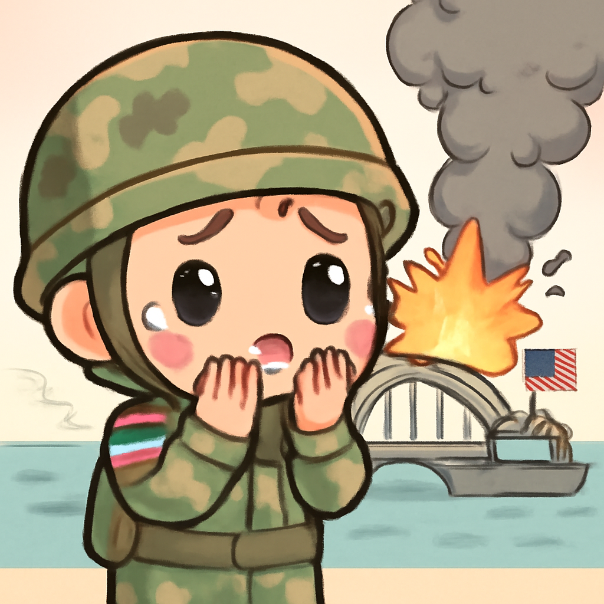
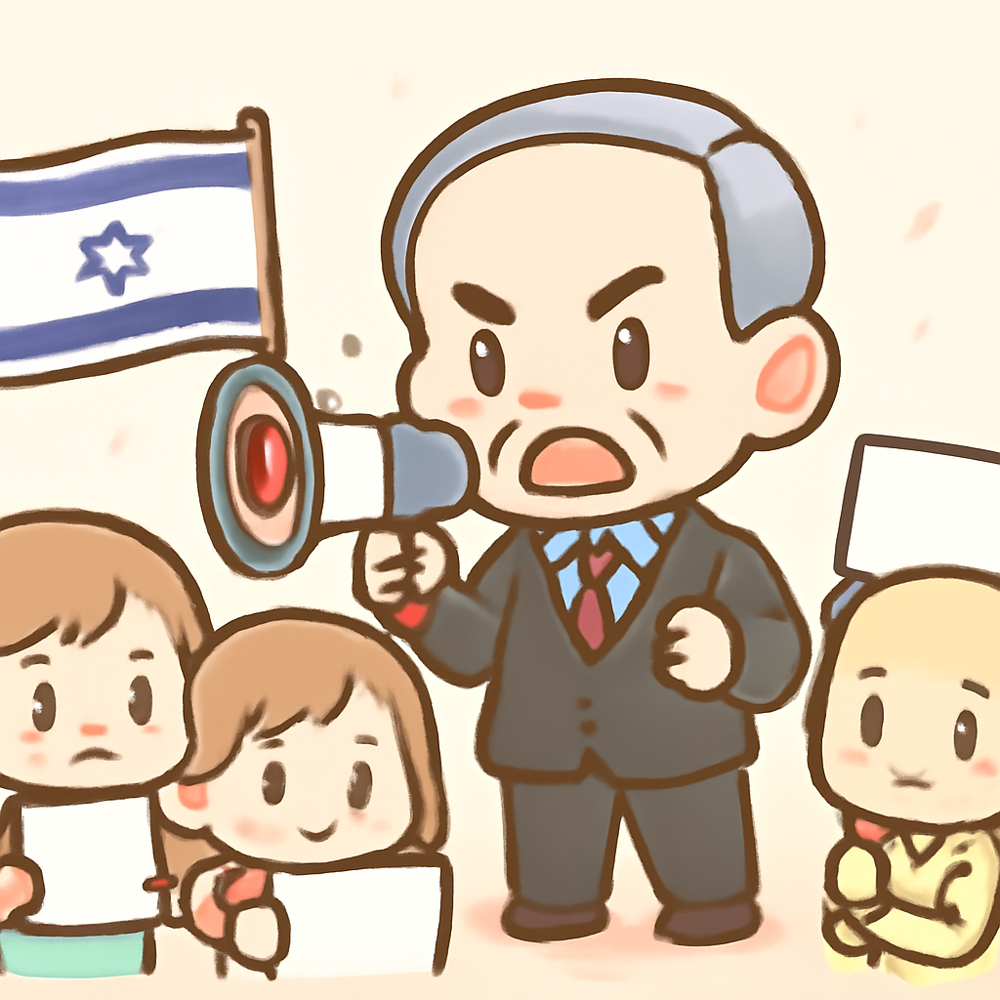

其一 · 伊朗 · 美國空襲加劇緊張局勢
美國對伊朗發動新一波空襲，局勢升溫。

在伊朗，最近美國的空襲針對了多座橋樑，標誌著兩國間的緊張關係再度升級。這次行動在霍爾木茲海峽附近進行，伊朗表示將對此作出回應。此事件可能影響整個中東地區的穩定，讓人不禁思考，這是不是又一次永無止境的戰爭的開始？
🔗 原始新聞 ↗
2026-07-17 · 以古觀今，以笑抗愁
美國對伊朗發動新一波空襲，局勢升溫。

在伊朗，最近美國的空襲針對了多座橋樑，標誌著兩國間的緊張關係再度升級。這次行動在霍爾木茲海峽附近進行，伊朗表示將對此作出回應。此事件可能影響整個中東地區的穩定，讓人不禁思考，這是不是又一次永無止境的戰爭的開始？
🔗 原始新聞 ↗
澤倫斯基撤換國防部長，民眾上街抗議。
在烏克蘭，澤倫斯基總統突然撤換了國防部長費多羅夫，引發民眾的抗議潮。許多人擔心這會影響烏克蘭在對抗俄羅斯的戰爭中的表現。這項決定反映了政府內部的權力鬥爭，也使得烏克蘭的軍事未來更加不確定。希望這不會變成一場新的內戰！
🔗 原始新聞 ↗
加拿大多處野火煙霧蔓延至美國，空氣品質下滑。
在加拿大，超過800場野火燃燒，煙霧蔓延至美國，包括從多倫多到紐約的城市，導致空氣品質警報頻頻出現。這不僅影響當地居民的健康，還讓整個區域的生活品質下降。看來大自然也在提醒我們，煙霧不僅是秋天的迷霧！
🔗 原始新聞 ↗
意大利熱那亞橋樑崩塌案，前高管獲刑12年。
在意大利熱那亞，因2018年橋樑崩塌導致43人喪生的案件中，前高速公路運營商負責人卡斯特魯奇被判刑12年。這起悲劇不僅引發了人們對基礎設施安全的關注，也讓大家重新思考責任的歸屬。希望未來能夠從中吸取教訓，不再讓悲劇重演。
🔗 原始新聞 ↗
以色列政府推進具爭議性法律，選舉前引發爭議。

在以色列，內塔尼亞胡政府在選舉前推進了一系列引發爭議的法律，這些法律削弱了對政府的法律監督，引起了社會各界的廣泛批評。這樣的舉動可能會影響民主制度的健全，讓人擔心未來的政治局勢會更加動盪。希望選民們能在投票時保持清醒！
🔗 原始新聞 ↗